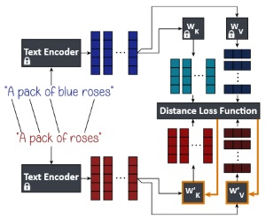

Abstract
Text-to-image diffusion models often make implicit assumptions about the world when generating images.
While some assumptions are useful (e.g., the sky is blue), they can also be outdated, incorrect, or reflective of social biases present in the training data.
Thus, there is a need to control these assumptions without requiring explicit user input or costly re-training.
In this work, we aim to edit a given implicit assumption in a pre-trained diffusion model.
Our Text-to-Image Model Editing method, TIME for short, receives a pair of inputs: a "source" under-specified prompt for which the model makes an implicit assumption (e.g., "a pack of roses"), and a "destination" prompt that describes the same setting, but with a specified desired attribute (e.g., "a pack of blue roses").
TIME then updates the model's cross-attention layers, as these layers assign visual meaning to textual tokens.
We edit the projection matrices in these layers such that the source prompt is projected close to the destination prompt.
Our method is highly efficient, as it modifies a mere 2.2% of the model's parameters in under one second.
To evaluate model editing approaches, we introduce TIMED (TIME Dataset), containing 147 source and destination prompt pairs from various domains.
Our experiments (using Stable Diffusion) show that TIME is successful in model editing, generalizes well for related prompts unseen during editing, and imposes minimal effect on unrelated generations.
Cross-Attention Layers in Text-to-Image Models
The user-provided text prompt is input into the text encoder, which tokenizes it and outputs a sequence of token embeddings \(\{\mathbf{c}_{i}\}_{i=1}^{l}\) describing the sentence’s meaning.
Then, in order to condition the diffusion model on them, these embeddings are injected at the cross-attention layers of the model. They are projected into keys \(\mathbf{K}\) and values \(\mathbf{V}\), using learned projection matrices \(\mathbf{W}_{K}\) and \(\mathbf{W}_{V}\), respectively. The keys are then multiplied by a query \(\mathbf{Q}\), which represents visual features of the current intermediate image in the diffusion process.
This results in an attention map, which is then multiplied by the values \(\mathbf{V}\) to produce the final cross-attention output.
We focus our editing efforts on \(\mathbf{W}_{K}\) and \(\mathbf{W}_{V}\), as they map the textual information into visual concepts.
TIME: Text-to-Image Model Editing

Our method accepts a pair of source and destination text prompts.
For each source embedding \(\mathbf{c}_{i}\), we identify the destination embedding that corresponds to the same token, and denote it as \(\mathbf{c}^{*}_{i}\).
The keys and values of the destination prompts are calculated as \(\mathbf{k}^{*}_{i} = \mathbf{W}_{K} \mathbf{c}^{*}_{i}\) and \(\mathbf{v}^{*}_{i} = \mathbf{W}_{V} \mathbf{c}^{*}_{i}\).
We then optimize for new projection matrices \(\mathbf{W}'_{K}\) and \(\mathbf{W}'_{V}\) that minimize the loss function:
\( \sum_{i=1}^{l}
\left\lVert {\mathbf{W}'}_K \mathbf{c}_i - \mathbf{k}^{*}_{i} \right\rVert_2^2
+ \lambda \left\lVert {\mathbf{W}'}_K - {\mathbf{W}}_K \right\rVert_F^2
+ \sum_{i=1}^{l}
\left\lVert {\mathbf{W}'}_V \mathbf{c}_i - \mathbf{v}^{*}_{i} \right\rVert_2^2
+ \lambda \left\lVert {\mathbf{W}'}_V - {\mathbf{W}}_V \right\rVert_F^2 \).
We prove that this loss function has a closed-form global minimum solution, and we use it to edit text-to-image models efficiently (editing Stable Diffusion in around 0.4 seconds).
BibTeX
@article{orgad2023editing,
title={Editing Implicit Assumptions in Text-to-Image Diffusion Models},
author={Orgad, Hadas and Kawar, Bahjat and Belinkov, Yonatan},
journal={arXiv:2303.08084},
year={2023}
}